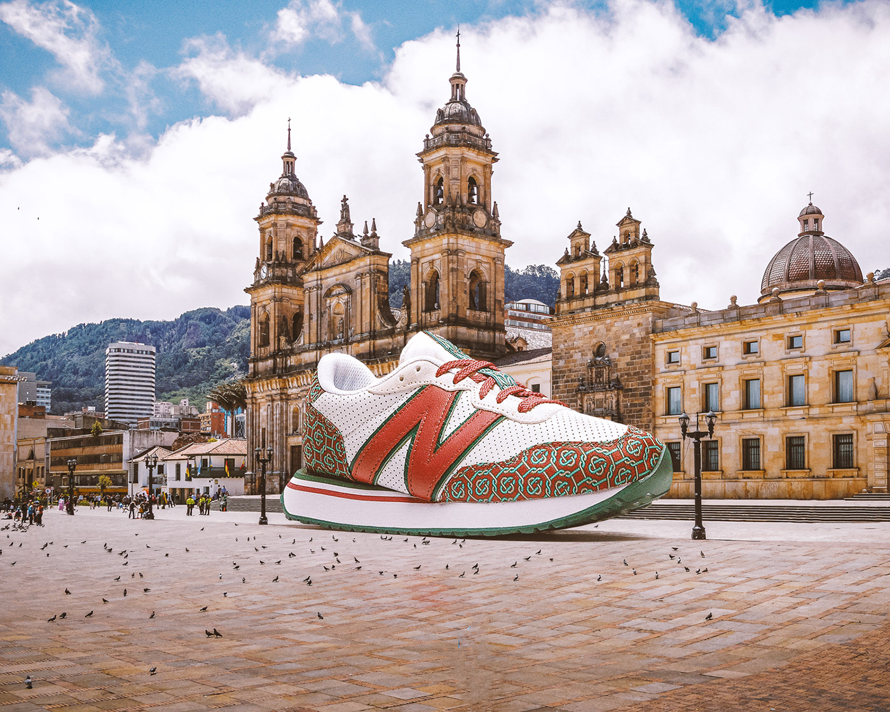
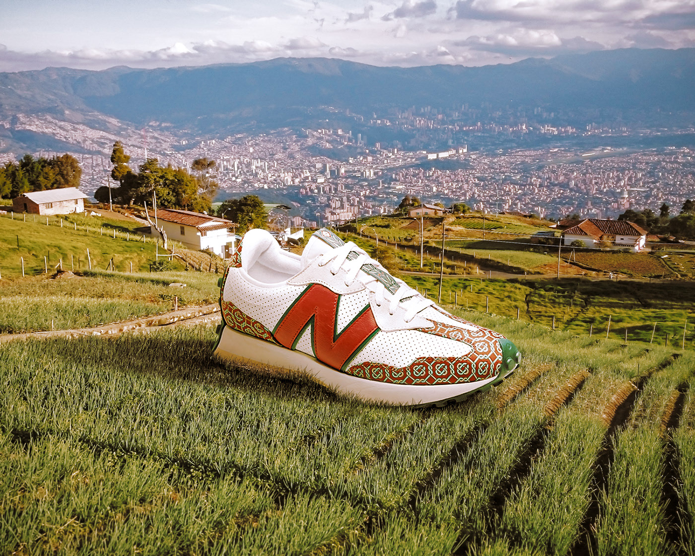

Welcome to
step by step
Our product is one of the
highest quality
and most comfortable in the world.We passed 12 quality
checks and the average score was 9.5/10.
We buy our
product in European countries such as Poland, France and
Germany.
We have a huge team
around the world: sellers, loaders, markers, programmers,
and a huge number of people who are trying for you. All
our workers are great specialists in their field, they do
their work with the highest quality.

Around the
world
We have an agreement with a transport
company, so we can deliver our
sneakers to any corner of the world!

Facts about sneakers
^^
Steve Jobs adored the New
Balance 990 and wore it very
often, which made them very,
popular. He presented almost all
of our favorite gadgets in these
sneakers.
^^
According to Moosylvania research,
Nike is the favorite brand of
Generation Y, that is, people born
between 1980 and 1995.
^^
Bill Clinton is a big fan of New
Balance. During his presidency, he
often went out for runs in the New
Balance 1500.